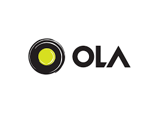
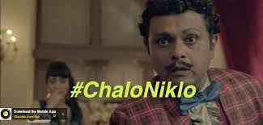
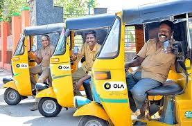

How India's mobility leader turned everyday transport problems into branded habits through emotionally relatable storytelling and category ownership.

Ola emerged as one of India's most recognizable consumer brands by turning everyday transport problems into memorable marketing moments. Rather than promoting ride booking as utility, Ola transformed commuting into a branded habit through emotionally relatable storytelling and category-focused messaging.
The brand's success lies in its ability to identify real consumer pain points and build campaigns around natural, everyday language that feels authentic rather than promotional.
This case study analyzes two landmark campaigns: #ChaloNiklo — a habit formation masterclass — and Auto Means Ola Auto — a category ownership strategy that redefined urban mobility.
The strategy tapped into a universal human truth: people often need to leave immediately. Whether late for work, rushing to meetings, or making spontaneous trips, transport decisions are urgent. Ola captured this with the natural conversational phrase "Chalo Niklo" that already existed in everyday Indian dialogue.
Instead of complex storytelling, the campaign dramatized relatable urgency moments. This made consumers see themselves in the creative, creating instant emotional connection and habit association.
"The best campaigns don't create new language — they weaponize existing consumer behavior. #ChaloNiklo became the mental trigger for instant mobility."
360-degree distribution across TV, print, outdoor, radio, and digital ensured consistent reinforcement. The campaign's simplicity solved a real problem using natural language, making Ola the default choice for spontaneous travel needs.

The genius was behavior upgrade, not behavior change. People already used auto-rickshaws daily — Ola simply made them faster and smarter through app booking. The campaign positioned Ola as the natural evolution of an existing habit.
The culturally sticky phrase "Bulaya Kya?" became a social media phenomenon, generating earned media through memes and organic sharing. This shareability amplified reach far beyond paid media.
"Category ownership campaigns don't create demand — they capture existing massive demand. Ola didn't invent auto usage; it owned auto booking."
Strong funnel design converted awareness to bookings through app opens → auto rides → retargeting for repeat commuters. The campaign delivered 3x business growth while dominating urban mobility conversations.

Starting with real-life urgency moments made campaigns feel authentic rather than promotional — natural language outperforms invented slogans.
Improving existing habits (auto usage) is easier and more scalable than creating new ones — Ola captured massive existing demand.
"Bulaya Kya?" entered meme culture, generating earned media that amplified paid reach exponentially through organic sharing.
First campaign built recall, second delivered performance — the complete marketing journey from memory to measurable growth.
Same message across TV, digital, outdoor, and radio created reinforcement that embedded the brand in daily consumer consciousness.
Auto Means Ola Auto didn't expand categories — it owned them completely, making Ola synonymous with urban daily transport.
Ola proves that great marketing starts with real consumer behavior, not product features. #ChaloNiklo built emotional memory through authentic language. Auto Means Ola Auto captured massive scale through category ownership.
The sequence is critical: first build recall through emotional truth → then deliver performance through functional excellence. This dual approach creates sustainable category leadership.
Brands should identify daily consumer friction points and build campaigns around natural solutions using existing language patterns. That's how utility brands become cultural habits.
At Brand Business Talk, we help brands with research, strategy, market insights, campaign analysis, and growth recommendations. Let's build your brand growth strategy together.